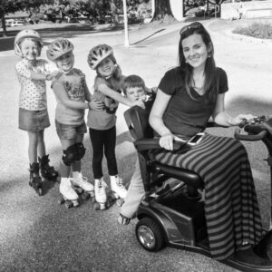
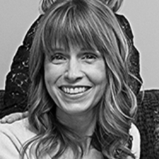
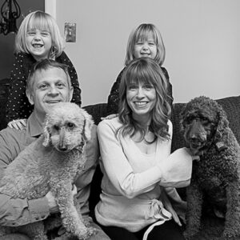
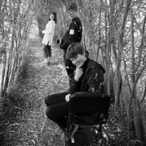

our promise
ML Bio Solutions was founded by the McColl and Lockwood families after a family member was diagnosed with limb‑girdle muscular dystrophy type 2I/R9 (LGMD2I/R9). In partnership with BridgeBio, the affiliate ML Bio Solutions strives to establish enduring, supportive relationships with the LGMD community. We are committed to approaching these relationships with honesty, integrity, and transparency. We actively seek to include the perspectives of patients, families, and advocates in the drug development process by listening and learning from them. We understand that every minute counts for patients and families affected by LGMD2I/R9.
LGMD2I/R9 is a muscular disorder with a significant unmet need
The current standard of care for LGMD2I/R9 relies on steroids and supportive management, such as pain management techniques. These options don’t address the root cause of the condition and thus do not affect muscle wasting or functional decline. Targeted treatments are urgently needed. Moreover, there is often a significant delay between symptom onset and diagnosis of LGMD2I/R9, which may delay medical management.
genetic testing
Genetic testing is the only way to confirm a diagnosis of LGMD2I/R9. Accurate diagnosis may open new avenues for medical management, including participation in clinical research studies and providing vital information to ensure appropriate care. Speak to your healthcare provider for information on genetic testing for LGMD2I/R9. For additional information on genetic testing resources, visit the Lantern Project, Detect Muscular Dystrophy, LGMD2I/R9 Research Fund, or LimbGirdle.com.
letters to the community
At BridgeBio, we look to patients and advocacy groups to better understand the unique needs and experiences of people living with rare genetic diseases, for which we hope to develop new treatments. One of our goals is to give back to the community by providing information about program milestones, helping increase awareness of, and providing updates on, the development of these potential therapies.
advocacy groups & resources
The LGMD2I/R9 community has made exceptional strides in spreading awareness of the unmet medical needs of people with LGMD2I/R9 and creating a network to connect them with physician experts in neuromuscular diseases. Our partnership and collaboration with patient advocacy groups are essential to helping us understand what’s meaningful to people affected by this condition. Connect with our patient advocacy team at [email protected].
There are many independent advocacy groups that provide resources and support for individuals with LGMD2I/R9. Some of these groups and resources are listed below. You or your loved one’s healthcare provider can help you identify resources or a group that best suit your needs.
CureLGMD2i Foundation
A non‑profit organization created by the Brazzo Family in 2011 when their daughter was diagnosed with LGMD2I/R9 at the age of 2 years. CureLGMD2i is focused on spreading awareness, providing advocacy support, and raising funds to support scientific research and drug development for LGMD2I/R9.
Visit siteThe Speak Foundation
Founded in 2008, the Speak Foundation is the first patient‑led organization for muscular dystrophy, LGMD, and other rare forms of neuromuscular disease.
Visit SiteLGMD2i Research Fund
A non‑profit organization focused on advancing the development of treatments for LGMD2I/R9 by contributing to the most promising projects from basic to clinical‑stage research.
Visit SiteLGMD Externally‑Led Patient‑focused Drug Development (EL‑PFDD) meeting
The meeting was designed to engage patients and elicit their unique perspectives on the health effects, daily impacts, treatment goals, and decision factors considered when seeking or selecting a treatment for symptoms and burdens associated with LGMD.
View resourceLGMD Awareness Foundation
A 501©(3) advocacy organization dedicated to globally raising awareness of the rare neuromuscular diseases known as LGMD. In collaboration with other LGMD foundations, the foundation’s focus is to provide curated educational information and resources for the LGMD community and the public. By increasing awareness of and advocating for individuals living with LGMD, the foundation assists in advancing diagnosis, care, and treatment as well as coordinates LGMD Awareness Day, which is celebrated worldwide on September 30th, each year.
Visit siteLGMD Voice of the Patient Report
A summary report of input shared at the EL‑PFDD meeting on LMGD subtypes hosted virtually on September 23, 2022.
View resourceMuscular Dystrophy Association
An advocacy organization with the mission of empowering people living with neuromuscular diseases to live longer, more independent lives.
Visit siteHear from people with LGMD2I/R9
Listen to On Rare, a BridgeBio podcast where we talk to patients or caregivers of a rare disease to learn more.
On Rare, Episode 17: “Improvise. Adapt. Overcome.” Dan is living with LGMD2I/R9
A podcast where Dan joins David Rintell, Head of Patient Advocacy at BridgeBio, to share the story of his long diagnostic odyssey and how a cancer scare ultimately led to his LGMD2I/R9 diagnosis. Dan shares his relief at receiving a diagnosis, paired with the fear of facing the unknown of a progressive neuromuscular disease. Listen here >
On Rare, Episode 14: “Love isn’t love till it’s given away.” Determination has helped Lacey fulfill her dreams but hasn’t stopped the progression of LGMD2I/R9
A podcast where Lacey joins David Rintell, Head of Patient Advocacy at BridgeBio, to talk about how LGMD2I/R9 has impacted her life. Listen here >
On Rare, Episode 1: “Something was not right with my muscles.” LGMD2I/R9 and the physical struggle to do basic life activities
A podcast with John and Tony, who have LGMD2I/R9. During their joint podcast interview, they tell us about their challenging diagnostic journeys and how their condition has changed the trajectory of their lives and forced them to navigate the world in ways that are often isolating. Listen here >
LGMD2I/R9 patient stories
-
meet Julie
Julie is a mother of three, a graduate student in counseling psychology, and an active member of her neighborhood, her church, her children’s schools, and the LGMD2I/R9 community.
She was diagnosed with LGMD2I/R9 in 2003, although she first started showing symptoms of the condition in early childhood. She grew up in a large, busy, loving household with her parents and five siblings. “I was always around kids, and life was awesome!” She remembers always being slow as a child, the last one when running, playing, and riding bikes with her siblings and schoolmates. She also had trouble climbing stairs, but despite consulting many physicians, there was never an explanation. She recalls feeling humiliated in school—ridiculed by her physical education teacher, who claimed she wasn’t trying hard enough. She internalized the criticism, pushing herself to exercise, diet, and go to great lengths to try to fit in with her peers.
“It was at least 10 years of going to different doctors and just being told, ‘You got to try a little harder.’” Finally, during a family trip, when she was unable to walk down a slope to a waterfall, her family saw that something was wrong. She was referred to a Muscular Dystrophy Association clinic and was ultimately diagnosed with muscular dystrophy. At that time, though, she was incorrectly diagnosed with facial scapular humeral dystrophy (FSH). Sometime later, when pregnant with her first child, she was finally accurately diagnosed with LGMD2I/R9.
Like many people living with LGMD2I/R9, her diagnostic journey was long and confusing; Julie felt both relief and terror at finally having a name for her condition. She worried about the impact on her family and her future. “By the time that you [actually have] a diagnosis, you feel relieved, but you also feel terrified that maybe you would rather not know what’s coming. [Your] mental health is very impacted.”
Nonetheless, Julie was determined to live a full life and not let her disease deter her from her dream of having a family. She now has three children, whom she proudly describes as confident, loving, kind, empathetic, and helpful to others.
There have been challenges along the way, some bad days and some wonderful days. She initially tried to hide her struggles—both physical and emotional. However, with the support of peers on LGMD2I/R9 social media groups and connecting with others at LGMD meetings, she found that being more open about her condition, including using mobility aides, was liberating.
Julie now uses a scooter for mobility and has learned to adjust her daily routines to fit her needs. “Making those adjustments was a mental struggle that I had to overcome. I remember I wrote in my journal that I thought using a wheelchair meant that I quit, and my life was over. But when I sat down in the scooter, and I was able to go to the park with my kids, I saw how much more I was able to do with my life by using these tools. I worried my kids would be teased at school about having a ‘wheelchair mom,’ but they thought the scooter was cool!”
She contributes a great deal to her community. She finds the support of her husband and children, her church, her friends, and her neighbors enables her to live a full and satisfying life. “I try to find areas where I can also help people; it feels good adding what I have to offer to the community that does so much for me.” She helped begin an after‑school drama program at her children’s school, and she helps run an art program through the school PTA.
Living with LGMD2I/R9 is her new normal. “I am all about finding a cure and a treatment to slow progression. But I also want to live life and find happiness now.” She notes that if she were to give advice to others living with LGMD2I/R9, “it would be just that—stay active and find happiness.”
-

meet Cyndy
A busy wife, mother, attorney, and dog lover, Cyndy has been living with LGMD2I/R9 for over 25 years. In her mid‑twenties, she began experiencing difficulties walking upstairs. Still, despite many tests, muscle biopsies, and interactions with doctors, it was over two decades before she had a definitive diagnosis. “For 25 years, I lived without a diagnosis. I was having more and more difficulty climbing steps, more difficulty walking distances. [I] started to use a cane and then used a mobility scooter for distances. Most of the time, I was physically fatigued, but I was determined to live a full life and focused on my work.”
Of her own volition, she purchased a genetic test kit, and the results indicated she was a carrier for LGMD2I/R9. This testing led her to a more thorough and extensive genetic test and, ultimately, a definitive diagnosis. “There was definitely a sense of relief in thinking, ‘Okay, now that I have it, I know what I can do to manage it.’ But the downside is that some of the things that can result from this disease are terrifying and can be deadly. And just sort of seeing how my disease has progressed over the years, it made me very scared of what was to come. Thinking about, ‘Am I going to be able to manage my family? How are they going to handle it?’ It opened up a lot of questions.”
Cyndy has always been a strong self‑advocate. Even before the diagnosis, she took care of herself, ate well, and exercised, and now she has added a daily meditation practice to her self‑care routine. “I absolutely feel the benefits of meditation. I feel stronger. I feel my mood change. I just feel like I can do this. It gives me a sense of purpose and direction and helps me find gratitude.”
Cyndy focuses on being optimistic. She finds inspiration and hope in the research underway to find effective treatments for LGMD2I/R9. “To know that people are working on this disease and care enough to make a difference for you means everything. It gives you a reason to be inspired and go on about your life because you know somebody cares enough to do that.”
She encourages everyone living with LGMD2I/R9 to seek support from others who are on their own personal journeys and to become advocates for themselves and others living with the condition. “Learn as much as you can, do research on your own, and assemble your own team of healthcare professionals who are knowledgeable and experienced in limb‑girdle disease.”
-
meet Seamus
Seamus is a teenage boy currently living with his family in Pennsylvania. Seamus and his family have lived and vacationed all over Africa as his dad is a tropical agriculture expert. He has seen exotic wildlife up close, visited breathtaking locations, and experienced many adventures that most kids his age only dream about.
Seamus loves reading, playing video games, and coding on the computer. He hopes to channel these interests into creating video games one day. He is interested in all that goes into gaming—the graphics, characters, music, plots, and intricate computer coding that creates the excitement.
When Seamus was about 8 years old, he and his family noticed he was having trouble walking. He also experienced extreme fatigue and pain, which prevented him from bike riding, swimming, hiking, and running as energetically as his siblings and from focusing during school. He didn’t know what was causing the problems. “I just knew that I hurt when I moved.”
Getting a diagnosis was not straightforward, but after ruling out potential tropical illnesses and other diseases that could have caused his symptoms, he was ultimately diagnosed with LGMD2I/R9.
“I was confused at first, and sad. I didn’t know anything about it.” Seamus’s mom, Annie, was very scared in the beginning. “I was terrified he would just wake up one day and not be able to move.”
At school in Johannesburg, sports were an especially important activity, and being unable to join in was hard on him. He also found that teachers and classmates were often not sympathetic. He described one particularly cruel classmate and some teachers who berated him, asking why he could walk in the early part of the day but had to use a mobility device later in the day. He liked drama and thought that participating in the school play would be something he could excel in and enjoy, but he was unexpectedly cut from the cast. Having so few opportunities for extracurricular activities was hard, and he was very discouraged.
When asked what advice Seamus might give to another child newly diagnosed with LGMD2I/R9, he said, “Know what your own power is—your capabilities and limitations. Expect other people to be confused and not always understanding. Also, find things you like even though they may not be everything you want to do.” Annie added, “Turn fear into problem‑solving and think about what changes you can make to adapt along the way. Try to not get too caught up in what you can’t do and keep everything in perspective.”